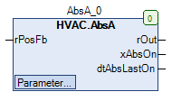

AbsA (FB)¶
FUNCTION_BLOCK AbsA
Short Description¶
Anti-blocking protection for an analog signal
Portrayal¶

Interfaces¶
Inputs¶
Name Datatype
Range
Init-Value
Function
rPosFb REAL Position feedback
Outputs¶
Name Datatype
Range
Init-Value
Function
rOut REAL Analog - output
xAbsOn BOOL Anti-blocking protection process
dtAbsLastOn DATE_AND_TIME Startdate / -Timepoint of the last anti-blocking protection process
Setpoints / Parameters¶
Name Datatype
Range
Init-Value
Function
rMinChange REAL 10.0 Minimum position change
tTime TIME 180s Time duration of the anti-blocking protection process
eDay eDoW eDow.Monday
Weekday of anti-blocking operation
todStartTime TOD 08:00:00 Uhr Time point of the anti-blocking protection process
rMinLimit REAL 0 Lower limit for the analog - output rOut
rMaxLimit REAL 100 Upper limit for the analog - output rOut
Functional Description¶
General¶
Voraussetzung für den Einsatz des Funktionsbausteins AbsA
Display of the blocking protection process xAbsOn¶
Setpoint / Parameter eDay¶
Setpoint / Parameter**tTime**¶
Visualization¶
Information¶
Element Authors
Date
Version Notes
Function
Adam Bartod 06.2016 1.0 Initial version
Programming
Adam Bartod 06.2016 1.0 Initial version
Test Jochen Reu 02.2017 1.0 Initial version
Documentation
Jochen Reu 10.2017 1.0 Initial version
Codesys¶
- InOut:
Scope Name Type Initial Comment Input rPosFb REAL Position feedback
rMinChange REAL 10 Minimum position change
tTime TIME TIME#3m0s0ms Time duration of the anti-blocking protection process
eDay eDoW eDow.Monday Weekday of anti-blocking operation
todStartTime TOD TIME_OF_DAY#8:0 Time point of the anti-blocking protection process
rMinLimit REAL 0 Lower limit for the analog - output rOut
rMaxLimit REAL 100 Upper limit for the analog - output rOut
Output rOut REAL Analog - output
xAbsOn BOOL Anti-blocking protection process
dtAbsLastOn DT Startdate / -Timepoint of the last anti-blocking protection process